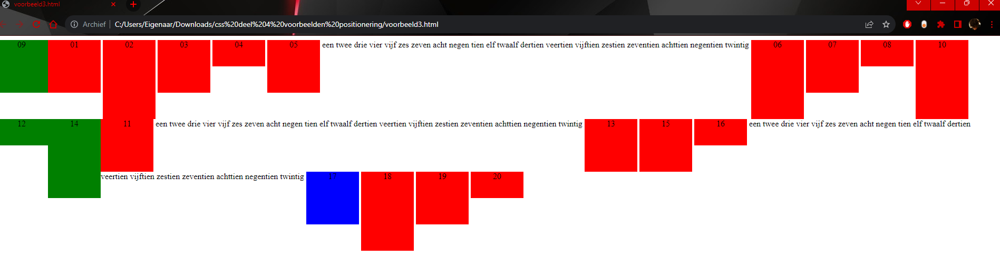
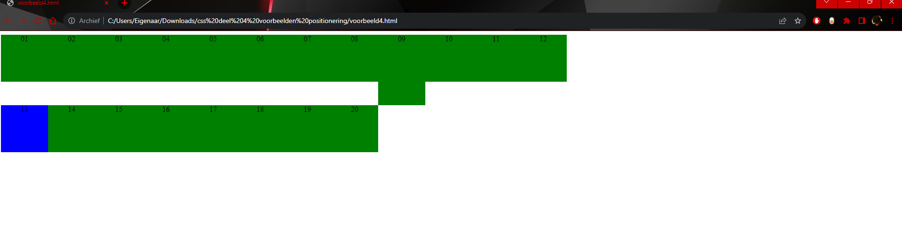

Het inline element zorgt ervoor dat alles op 1 lijn komt(naast elkaar verschijnt) en is de grootte hetzelfde als het element erin,
het block element zorgt ervoor dat elk element een apart blok vormt en hierdoor wordt de height en width, waardoor de rode achtergrond ook groter wordt.
Het inline-block vormt de 2 elementen samen.
Dit komt doordat je de div elementen telkens op een andere regel zet en niet achter elkaar.
De tekst die zich in het div element bevindt wordt gecentreed omdat er in de css code "text-align: center" staat.
vertical-align: center bestaat niet.
Dit centreert de tekst verticaal binnen inline-elementen.
Stel de line-height gelijk aan de hoogte van de container zelf.
Gebruik deze 2 in je css code: "display: table-cell" en "vertical-align: middle".
Deze zal voorrang krijgen, doordat dit specifieker is.


Andere Labo"s